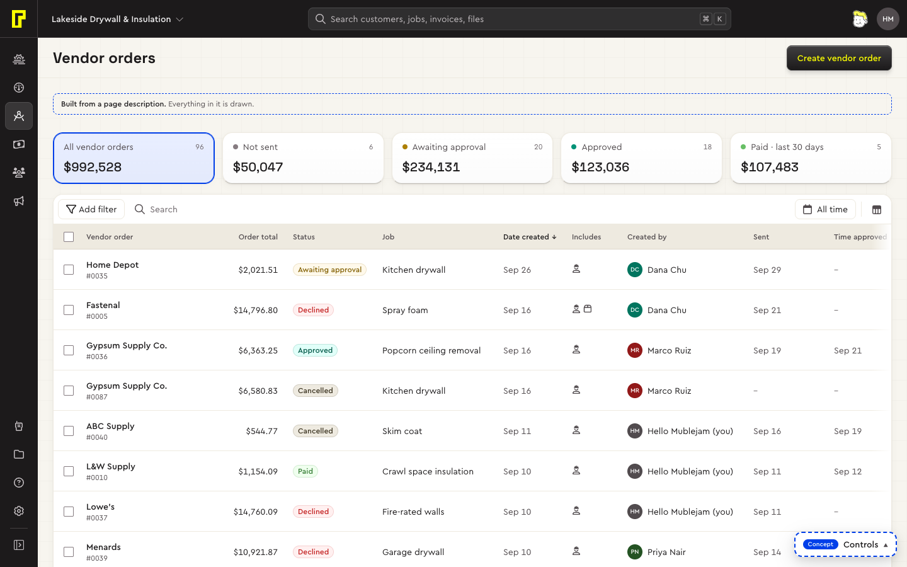
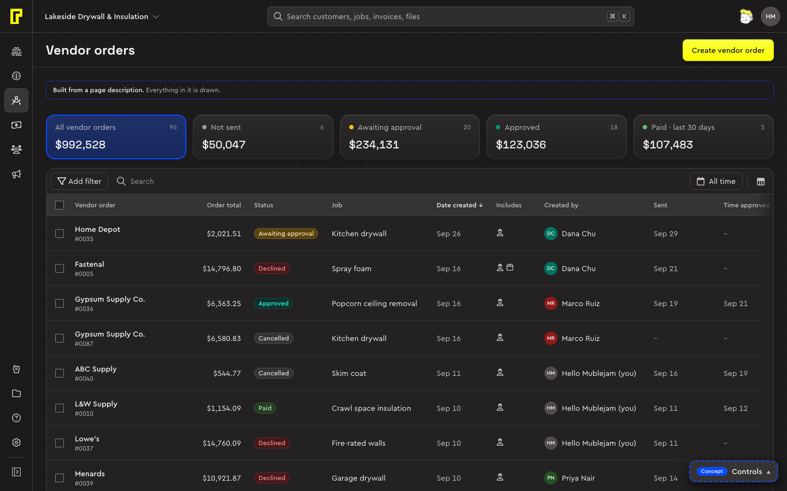

The system is built in layers. Tokens are the values, components are made from tokens, patterns say how components behave together, page types arrange them, and pages are built from page types by written rules. Each layer uses only the one below it, so a change at the bottom reaches every page and nothing above it has to be touched.
The layers
| Layer | What it holds | Where it lives |
|---|---|---|
| 1. Tokens | Primitives (the colour ramps: cement, pitch-black, blue print, yellow…) and, on top of them, the semantic tokens components actually use, named <category>-<role>[-<state>]: --color-surface-canvas, --color-action-primary. Type, space, radius, shadow, layers and motion, light and dark. | system/tokens.css |
| 2. Base | Element defaults, the fonts, reduced motion, and which surface a thing sits on (--surface-raised), said once by the surface. Type roles as utility classes. | system/base.css, system/utilities.css |
| 3. Components | One CSS file per component, variants as data attributes, semantic tokens only. | system/components/ |
| 4. Patterns and page types | How components behave together, written as contracts, and the parts arranged into a kind of page: the list page in the system, the to-do, calendar, pipeline and timeline as concepts. | docs/interactions.md, system/patterns/list-page.css, concepts/<type>/ |
| 5. Pages | Real pages, built from a model of the thing and the page's intent by the recipe's rules. | system/model/, system/recipes/list/, pages/list/ |
Read one value down through the layers:
/* 1 · tokens.css: a primitive, then the semantic token on top of it */
--color-cement-200: #f7f5ef;
--color-surface-canvas: light-dark(var(--color-cement-200), var(--color-pitch-black-950));
/* 2 · base.css: the page's paper */
body { background: var(--color-surface-canvas); }
/* 2 · base.css: surfaces say once that they're raised… */
:where(.card, .dialog, .pop, .menu, .floating-bar, .toast, [data-surface="raised"]) { --surface-raised: 1; }
/* 3 · …and a secondary button reads it: lifted on the page, flat on a card */The tokens use the same names as the React prototype's, so the prototype and this CSS read the same variables. Components never reference a primitive: a --color-cement-… in system/components/ is a bug.
The repository
| Folder | What it is | What's in it |
|---|---|---|
audit/ | As-is: Bolster's live product, measured | The page inventory, extracted values with counts (tokens.json), the drift report, one file per component, layout and pattern found, the gaps, the board (audit/index.html), and the scripts to measure it again. |
system/ | To-be: the design system | tokens.css, base.css, utilities.css, components/, patterns/, the models (model/), the page recipes (recipes/), one specimen per component (specimens/), the catalog and inventory.json, the list of what exists and what's missing. |
concepts/ | Experiments: whole pages, one page type at a time | The list, the to-do, the calendar, the pipeline and the timeline, with made-up sample data; shared/ holds the Bolster app shell and the icon subset. The hub links them. |
pages/ | Pages built for real | Each page's intent (list/<nav>.intent.json), the description the builder writes from it, the survey (survey.html) and the corrections log. |
docs/ | Decisions and contracts | decisions.md (D-entries: every token or component decision and why), interactions.md (I-entries: how things behave), and the research behind them. |
site/ | This documentation | Written in site/src/. scripts/build-site.mjs builds it and reads the tokens, decisions, contracts and inventory from where the system keeps them, so the site can't fall behind the system. |
scripts/, tests/ | Checks and generators | The contrast check, the browser checks, the page checks, the generated files (icons, the token specimen, the rules page), and the visual and accessibility tests with their approved screenshots. |
Cascade layers and specificity
Every file opens by declaring the same four layers, in order. A rule in a later layer always beats a rule in an earlier one, whatever its selector, and CSS outside any layer (your app's own) beats them all.
@layer tokens, base, components, utilities;
@layer components {
:where(.button) { … }
:where(.button[data-variant="secondary"]) { … }
:where(.button[data-size="sm"]) { … }
}- Low specificity on purpose. Components are written inside
:where(), which adds no specificity, with variants, sizes and tones as data attributes. Any single class overrides them, and nothing needs!important. - Variants are attributes, not classes.
.button[data-variant="brand"][data-size="sm"]reads as one thing with two settings.data-stateholds a hover, press or focus still, for specimens and these docs only. - Behaviour on the platform. Dialogs, popovers, details and native inputs carry the behaviour. Any script is small, plain JavaScript and never needed for styling.
- Still to tidy. The list page's parts (the toolbar, chips, popovers, summary cards, the floating bar, the record, the states, the calendar, the drop line) moved from the concept keeping their plain class selectors, so they render exactly as before. Moving them into
:where(), as the older components are, is still to do.
Behaviour defined once
A behaviour that two pages share is defined once, high up, and inherited, never copied into a page. A page passes in only what's its own: where its content starts, what it keeps in use, what a pick does. Before a page gets new behaviour, look for it in concepts/shared/ and system/. If a second page needs something a first page has, it moves up first. Copies drift: when the to-do copied the list's scrolling without its sticky offsets, its panel slid under the top bar.
| What | Where | Used by |
|---|---|---|
| What hides and sticks as you scroll | BolsterShell.scrolling; --page-top and .page-hscroll in list-page.css | Every page: the bars go as you scroll down and come back on the way up; headers stick at --page-top; a part wider than the screen gets a scrollbar at the window's foot |
| Nested menus | BolsterShell.nestedMenus(pop) | The lists' display and row menus, the pipeline's display settings |
| Filter chips | BolsterShell.filterChips({ onRemove, onClear }) | Tasks, the pipeline and the timeline; the lists use its chip, Clear all and menu |
| Toasts with Undo, where a popover opens | BolsterShell.toast, BolsterShell.placePopover | The list, the to-do, the calendar |
| The week | BolsterShell.week | The date range picker, the to-do's This week, the calendar: Monday first, one setting |
| The canvas grid | BolsterShell.canvas, styled in shell.css | The background of every page |
| Tooltips | system/components/tooltip.js | Anything with data-tip |
// a page passes what's its own; the shell does the rest
const chrome = BolsterShell.scrolling({ into: (top) => el.getBoundingClientRect().top < top, toolbar, busy, onScroll });
const nest = BolsterShell.nestedMenus(pop);
const chips = BolsterShell.filterChips({ onRemove: (key) => …, onClear: () => … });
BolsterShell.toast("Task completed", { undo: () => … });BolsterShell is the app shell the concepts run in (concepts/shared/shell.js). What it settles is written as contracts, such as page scrolling and nested menus, so the behaviour can be built again in Bolster's own app shell.
Models and intents
A page isn't drawn from its source. A live Bolster page, a screenshot, a brief or a PRD is read for its meaning: what exists, how it moves, what people do and look for first. How the original looks is left behind. Two written layers sit between the source and the page, and no more.
| Says | Where | |
|---|---|---|
| The model | What a thing is, with nothing about pages: its noun and how people name it, its fields and their types, its lifecycle with each status's next step, its actions, and its open questions, each with its evidence. There is one model per thing, shared by every page that shows it. Ideas that recur live once: kinds.json (labor, materials), icons.json (the icon vocabulary). | system/model/<thing>.json |
| The intent | What one page is for: who comes, their tasks, the key figure, what people look at after the name, the opening order, export, and what the source showed that the system decides instead (notCarried). | pages/list/<nav>.intent.json |
// pages/list/vendor-orders.intent.json (shortened)
{
"nav": "vendor-orders",
"model": "vendor-order",
"for": "Office staff and estimators who buy labor and materials for jobs, and follow each order until it's paid.",
"tasks": [
{ "do": "Send the orders that are ready", "status": "not-sent", "evidence": "The Send step on unsent rows; the Unsent card." },
{ "do": "Find a job's or a vendor's orders", "by": ["job", "vendor"], "evidence": "The All jobs and All vendors pickers." }
],
"keyFigure": "total",
"sort": { "column": "created", "dir": "desc" },
"notCarried": [
{ "what": "The Next step column of buttons", "why": "L-next-step: …" }
]
}From the two to a page
- Read the source. A live page is explored, not only looked at: its menus, filters, what a row click opens, the bulk bar. A screenshot or a brief stands in when the page can't be opened.
- Write the model and the intent, each with its evidence.
- Build.
system/recipes/list/build.mjsapplies the list recipe's rules (rules.json: L-source, L-row-click, L-filters and the rest) and writes the page's description,pages/list/<nav>.json, with every choice and its reason. The description is output: never edit it, change the model or the intent. - Check.
check.mjsholds the description to the schema and the rules: errors, warnings, and the assumptions a reviewer should look at.npm run pagesrebuilds and checks every built page and lists what changed in each, field by field. - Ask. What the evidence can't settle is an open question with named options and a default the page assumes until someone answers.
pages/survey.html?p=<nav>asks them as a form. - Draw. The list concept's renderer draws any description:
concepts/data-list/index.html?d=../../pages/list/vendor-orders.json.
node system/recipes/list/build.mjs pages/list/vendor-orders.intent.json
node system/recipes/list/check.mjs pages/list/vendor-orders.json
npm run pages

vendor-order.json and its intent. Expenses, subs and vendors, tasks and bid requests are built the same way.The rules are tracked on the list recipe's rules page. Lists are the only recipe so far. The to-do, the calendar, the pipeline and the timeline are hand-built concepts.
From concept to system
New parts are built in a concept first, on top of the system, with sample data. Once a part settles there, it's listed under Drafts in the catalog until the product designer approves it. Then it moves into system/ with its D-entry, and an I-entry for its behaviour. A concept that disagrees with the system changes the system first: the system is the status quo to build on until it changes.
Every foundation, component, pattern, page type and tool has one of five statuses, kept in system/inventory.json and shown as a badge on its page:
| Status | Means |
|---|---|
| Stable | In the system and decided: safe to build on. |
| Needs work | In the system, but not fully addressed: parts are missing or out of date. |
| Trying out | In use and working, still being judged: it may change. |
| Draft | Built and working in a concept, waiting for the product designer's approval before it moves into the system. |
| Not built yet | Bolster needs it and the system doesn't have it. |
- 40 stable
- 9 needs work
- 9 trying out
- 2 draft
- 37 not built yet
Decisions carry a status of their own: decided, proposed (open for review), trying out, or superseded, naming the entry that replaced it.
The as-is audit
audit/ is Bolster's live product as it is, measured, not judged. It's the evidence the system's decisions are weighed against: each D-entry names what it replaces.
- What was measured: the stack (Vue 3, PrimeVue unstyled, Tailwind 3, Font Awesome 6), the page inventory from the app's router, the computed styles of every visible element on 26 views, and Bolster's 33 app stylesheets parsed offline.
- What it found (
audit/drift.md): the rendered interface is more consistent than its stylesheets, with the drift in a few places. Examples: seven greys for text plus pure black, 83 type styles where the system has 11 roles, and 22 z-index values up to 2147483647. The component census (audit/components/) adds what each component looked like: 364 PrimeVue buttons in 8 severities, heavily overridden locally, none with a visible focus state. - How to read it: the as-is board and the page types show it at a glance. The scripts in
audit/scripts/measure it again.
Decisions and contracts
- D1Token structure follows the prototypeDecided
- D20Delivery: plain CSS, layered, low specificityDecided
- D31Pages are described, and the rules are written onceProposed
- D33The status quo: warm light, cool dark, and the list page in the systemDecided
- D56Sources are read for meaning; pages are built from a model and an intentDecided
- D65Checks that run themselvesDecided
- D73On phones the tab bar goes with the top bar as you scrollDecided
- D126Nested menus and filter chips, the shell's
- D128The page is the one scrollerDecided
- I23Page scrolling